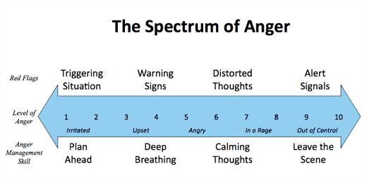

Is Your Anger Out of Control?
CMHC Business Hours:Monday thru Friday, 8:00am - 5:00pm
Phone: (512) 471-3515 - Student Services Building 5th Floor
Topics
Should I learn anger management?Anger occurs on a spectrum
Anger management skills
Anger prevention
Mild anger
Escalating anger
Intense to out-of-control anger
Get support as you learn to manage anger
Resources
Is anger healthy?
Anger is a normal, natural emotion that may come about for a wide variety of reasons. Most often, anger is a reaction to threats, mistreatment, or frustration. While anger is not enjoyable for most people, it can be healthy. For example, it may motivate you to change an unhappy situation. However, if anger gets too intense, or is expressed inappropriately, it may be harmful to your well-being, relationships, and academic and professional success.Should I learn anger management?
Managing anger means having the skills to keep it from escalating to levels that are harmful to yourself or others. Anger management skills can be learned. However, learning is an individualized process, and you will have to experiment with which strategies work for you. As you work to increase your anger management skills, keep these tips in mind:- Change can be difficult and takes time. Have faith in your ability to control your anger, even when you slip up.
- Stay active! Exercise helps your body alleviate the negative symptoms of anger, such as tense muscles and headaches. It also can be a good distraction or provide time to process angry emotions.
- Practice healthy expression of anger by talking or writing about it before it reaches high levels. Engage the person you're angry with in a respectful conversation, talk to friends or loved ones about your feelings and get their feedback, or keep a journal.
Anger occurs on a spectrum
Anger is experienced on a broad spectrum, from mild to extreme, with distinct levels that have different effects on your physical, emotional, and cognitive (thinking) states. The graphic below illustrates this broad range of intensity, as well as red flags that correspond with anger as it grows. Red flags are what we can identify in ourselves and our environment to help us recognize when our anger is increasing. When we notice red flags as they happen, we are empowered to use anger management skills that will help to keep anger from getting out of control.
Example: Example: Early warning signs may include: pacing, increasing heart rate, tensing muscles, desire to leave or get intoxicated, biting nails, etc. Think back to the last time you were angry. What were your first warning signs?
Warning signs can remind us to try to slow our bodies down through relaxation. Deep breathing is not simply emotionally calming; it also produces positive physical results that reduce tension.
Correcting thoughts, calming thoughts, and mental imagery can help re-orient your thinking and lower your anger. Learning to manage distorted thoughts takes honesty with yourself, thoughtful reflection, and time. With preparation and practice, you can respond to thought distortions as soon as you notice them, empowering you to decrease their severity and "automatic," habitual nature.
Alert signals give you important information: your efforts at de-escalation did not work. At this level of strong anger, it is much harder to maintain control over your thoughts, emotions, and actions. When you see alert signals, leave the situation and get to a neutral, safe environment. After calming down, use this opportunity to brainstorm different ways of preventing your anger from escalating next time. Like any major change, if you have a history of intense anger, learning to control it will take time and practice.
Many people go to counselors, support groups, classes, or other resources in order to improve their anger management skills. Consider contacting the Counseling and Mental Health Center, or another trusted mental health service provider, if you experience the following:
CMHC Appointments
In Austin
Austin Men's Center: Provides anger management classes, as well as other services.
UT's Counseling & Mental Health Center (CMHC)
Anger management skills
For each red flag identified in the spectrum, there are corresponding strategies that may prevent your anger from escalating.
Follow the links below to jump to a section that is appropriate for you:
Anger prevention: To manage anger in a triggering situation, a strong strategy is to plan ahead.
Triggering situations are events, places, or interactions that tend to prime you for anger, even though you may not get angry every time you are in a triggering situation. Each person has different "triggers." You may recognize a triggering situation of yours because you are consistently irritable or have a "short fuse" each time you are at a certain place, or with certain people. Identify your triggering situations by reflecting on times you have been angry. Where were you angry? Why? Are there any places, persons, or situations that stand out?
The best way to deal with triggering situations is to plan ahead. A good way to learn how to plan ahead is:
Triggering situation: Going to bars on the weekend.
List of factors: loud drunk people; I focus on any conversation I can hear that I think is stupid or irritating; I get angry more easily if I am drunk; crowded rooms lead people to bump me and step on my shoes; lots of the music is annoying to me.
Next time I find myself in a bar, I will do the following to prevent my anger: I will talk with friends so that I do not pay too much attention to what others in the room are saying. I will move to other parts of the bar to move away from anyone I overhear whom I find annoying or angering. I will not drink more than two drinks. I will leave if these plans do not prevent anger. I can ask my friends if we can go to another bar or just go home.
Mild anger: When you recognize your warning signs, try deep breathing or other relaxation exercises.
Warning signs are the first indications that you are starting to get angry. They are often small physical sensations. When you "catch" these early, you are more likely to be able to calm yourself down before the situation escalates.
Escalating anger: When you notice your thought distortions, respond with correcting thoughts, calming thoughts, or mental imagery.
If you pay attention to your thoughts as anger builds, you may notice that you have an internal dialogue about your anger as you talk to yourself (silently or aloud) about what is angering you. When your thoughts increase your anger out of proportion to the situation, you are having thought distortions. Learning about the different kinds of thought distortions will help you to monitor your thoughts and respond to them in ways that de-escalate your anger.
Intense to out-of-control anger: When you see your alert signals, it is important to leave the situation and get to a neutral, safe environment.
Alert signals are the final red flag, telling us that we have reached high levels of anger that may lead us to act impulsively or harmfully. Alert signals are different for each of us. Think back to the last time you lost control of your anger. How did your body feel? What were you saying or doing? Some people's alert signals include shaking uncontrollably, yelling, making fists, or hitting walls.
Get support as you learn to manage anger
It takes time and practice to effectively manage anger, and you may slip occasionally at first. Reach out to loved ones and other trusted supporters for encouragement and feedback, and ask them to hold you accountable to your commitment to change.
Resources
On Campus
CMHC Interpersonal Groups
CMHC Crisis Line 512 471-2255
Behavior Concerns Line: (if you are concerned about another person's behavior) 512 471-2255
CMHC Stress Recess
Austin Stress Clinic: Provides programs for relationship violence and assault prevention.
Where can I find help?
Call 512-471-3515 for information on setting up an appointment with a counselor.
CMHC also offers the CMHC Crisis Line: 512-471-CALL for a telephone counselor.